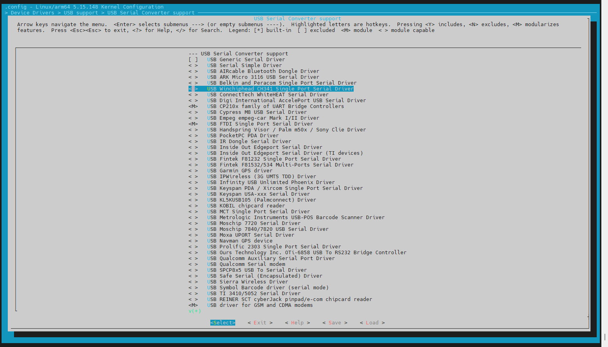

Build Kernel of Jetson Orin Nano
In my case i have to modify the modules to support out of tree modules for my robot board.
Query System component versions
Here’s a compact set of CLI commands to check Jetson Linux and JetPack component versions on a Jetson Orin Nano Super (assuming it runs Jetson Linux 36.X or similar):
Jetson Linux & JetPack Version
dpkg-query --show nvidia-l4t-core
- Shows something like:
nvidia-l4t-core 36.4.4-20230925123456 36.4.4is the Jetson Linux version (part of JetPack 6.2.1)
CUDA Version
nvcc --version
or
cat /usr/local/cuda/version.txt
cuDNN Version
cat /usr/include/cudnn_version.h | grep CUDNN_MAJOR -A 2
TensorRT Version
dpkg -l | grep nvinfer
All NVIDIA Packages (Quick Overview)
dpkg -l | grep nvidia
Camera & Multimedia Stack
dpkg -l | grep libargus
or
dpkg -l | grep nvmm
UEFI Bootloader Version
cat /proc/device-tree/chosen/bootloader-version
Kernel Version
uname -a
- Should show something like:
Linux jetson 5.15.0-tegra #1 SMP ...
L4T Release Info
cat /etc/nv_tegra_release
- Gives a summary like:
# R36 (release), REVISION: 4.4, GCID: 12345678, BOARD: jetson-orin-nano
Jetson Linux 36.X
Jetson Linux 36.X is NVIDIA’s latest board support package (BSP) for Jetson Orin modules, providing kernel, drivers, bootloader, and Ubuntu-based root filesystem for edge AI development.
Jetson Linux 36.X—specifically version 36.4.4 as of October 2025—is part of the JetPack 6.2.1 SDK and is designed to support production-grade deployment on Jetson AGX Orin, Orin NX, and Orin Nano modules. Here's a breakdown of its key features and architecture:
Core Components
- Linux Kernel 5.15: Offers long-term support and improved hardware compatibility.
- Ubuntu 22.04 Root Filesystem: Provides a familiar and robust userland environment.
- UEFI Bootloader: Modern boot architecture for secure and flexible boot management.
- OP-TEE: Trusted Execution Environment for secure operations and cryptographic tasks.
- NVIDIA Drivers: Accelerated support for GPU, camera, and AI workloads.
Security Enhancements
- Hardware Security Module (HSM) support: Enables signing of boot images for secure boot.
- OTA Tools: For over-the-air updates and remote maintenance.
- Vulkan 1.3 Support: For advanced graphics and compute workloads.
Development Workflow
- SDK Manager Integration: Flash Jetson modules and install JetPack components easily.
- Sample Filesystem and Flashing Utilities: Streamlined bring-up and customization.
- Source Availability: Kernel, drivers, and rootfs sources are hosted on GitHub and NVIDIA’s developer portal.
Compatibility
- Supports:
- Jetson AGX Orin Developer Kit
- Jetson Orin Nano Developer Kit
- All Jetson Orin Production Modules
- Not backward-compatible with older Jetson platforms like TX2 or Xavier.
Documentation & Resources
- The Jetson Linux Developer Guide provides detailed instructions for flashing, customizing, and deploying Jetson Linux.
- Release notes and BSP packages are available on the NVIDIA Developer Portal.
Modify Kernel
To build a custom kernel with a new driver for a Jetson Orin Nano, you'll need to download the correct sources, configure the kernel, compile it with your driver, and deploy it carefully.
Here’s a step-by-step breakdown tailored for a Jetson Orin Nano Super setup running JetPack 6.x:
1. Prepare Your Environment
Backup your system
or work on a separate SSD to avoid bricking your main setup.
- Install essential packages:
sudo apt update && sudo apt install -y build-essential bc bison flex libssl-dev libncurses-dev libelf-dev
2. Download Kernel Sources
Use the JetsonHacks scripts or manually grab the BSP (Board Support Package) sources:
Before using these scripts, ensure:
You have a Jetson Orin device running JetPack 6.X.
- JetsonHacks repo: jetson-orin-kernel-builder
git clone https://github.com/jetsonhacks/jetson-orin-kernel-builder.git
Using the scripts to perform the steps. Start with downloading the sources
./scripts/get_kernel_sources.sh --force-replace
3. Configure the Kernel
./scripts/edit_config_cli.sh
Enable your driver (either built-in or as a module) via make menuconfig or make xconfig.
4. Integrate Your Driver

5. Build the Kernel and Modules
./scripts/make_kernel.sh
./scripts/make_kernel_modules.sh
References
Build Jetson Orin Kernel and Modules
Issue with CH340 USB-to-Serial Converter Not Creating Device Files on Jetson Orin Nano Super